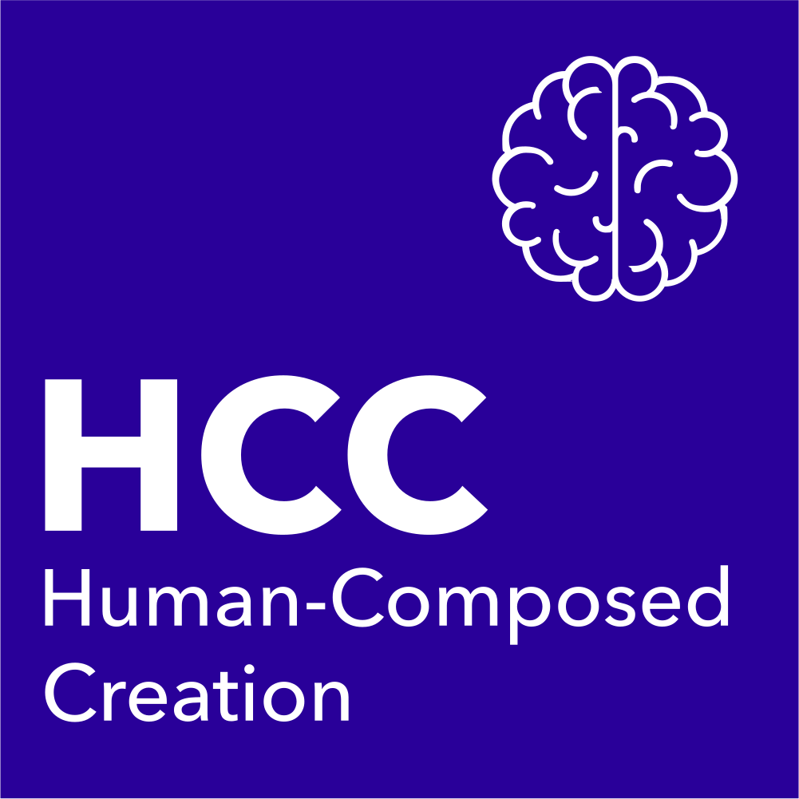
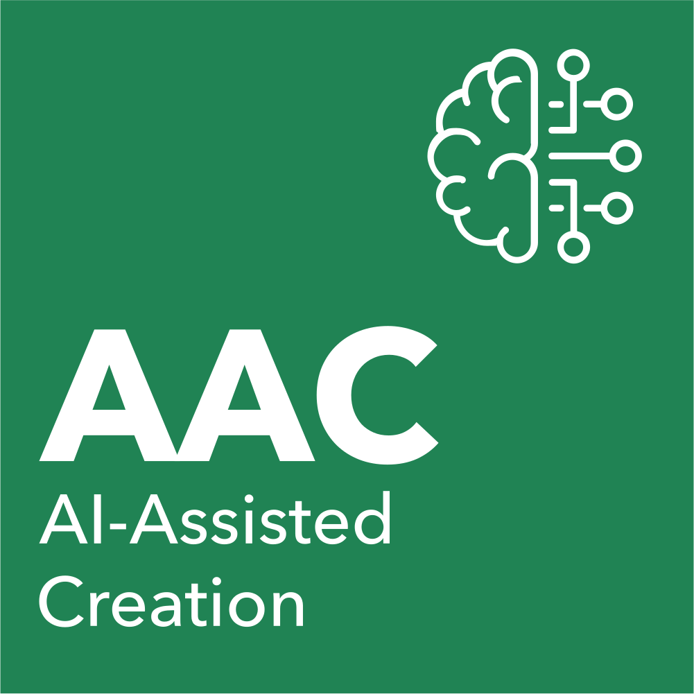
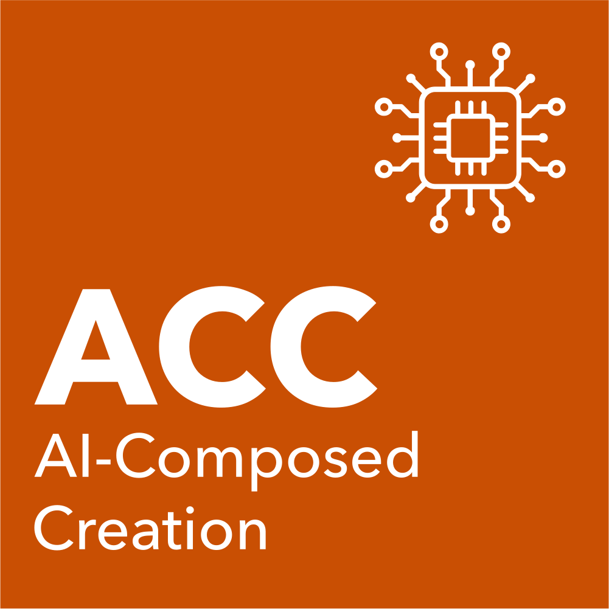
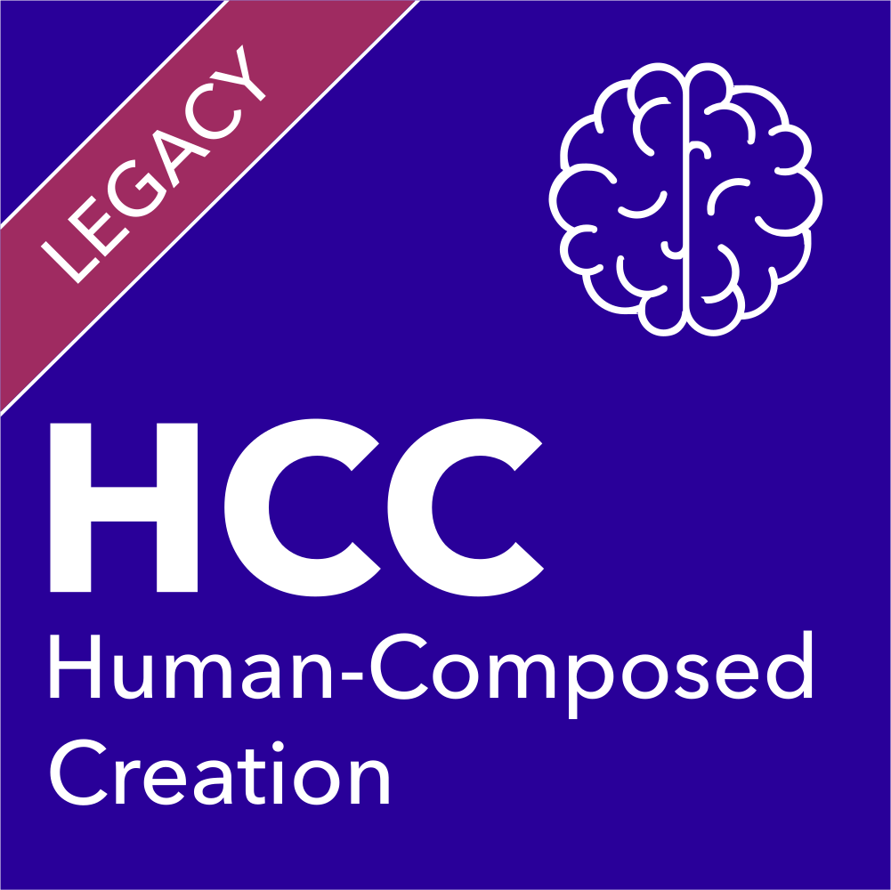

The badges, registries, watermarks, and protocols that help audiences answer one question: how was this made?
This is a map of every effort we know about — grouped by what each one actually does, with links out to every originating organization. We built it because the people working on these problems deserve to find each other, and because audiences deserve a single place to compare what each effort offers. Learn more about how to read this page.
Credtent's Creative Origin system has been in market since early 2024. The badges appear on physical product packaging across the industry. We give them away. The symbols are free to use under our open license. We charge for expert-led certification, which is the layer that makes the badges trustworthy when something more than self-declaration is needed.




The badges are designed to look like elements of the periodic table — scientific, universal, recognizable across mediums. Our brand is deliberately off the badges so they can be adopted broadly.
Our Creative Origin badges have been in market since early 2024. The Authors Guild's "Human Authored" certification converged on the same definitional ground our standard already occupied — the de minimis exception, the editor-test framing, the requirement for written agreements with ghostwriters and developmental editors — and our v3.1 standard (May 2026) makes that common ground explicit. We work the same way with the Tabletop Game Designers Guild, co-defining HCC, AAC, and ACC for game design with designers Elizabeth Hargrave and Matt Leacock, and we are in conversation with the Creative Coalition on AI (where Ted Tremper is the executive responsible) and with music industry organizations to ensure the standards reflect the realities of each medium.
These efforts answer questions like "is this AI-generated" or "what was the chain of custody" at the technical level. They use watermarks, cryptographic signatures, or content credentials embedded at the point of creation. They are infrastructure-grade and machine-readable. They are also defeasible by a screenshot or a re-compression, which is why most of the people working in this space describe them as complementary to authorship certification rather than substitutes for it.
| Effort | What it does | Learn more |
|---|---|---|
| C2PA — Coalition for Content Provenance and Authenticity | Open technical standard for embedding cryptographic provenance metadata in images, video, audio, and text. Backed by the Linux Foundation, Adobe, Microsoft, BBC, and others. The most widely adopted technical provenance standard. | c2pa.org |
| Adobe Content Authenticity Initiative (CAI) | Adobe-led membership initiative implementing C2PA. Powers Content Credentials in Photoshop, Firefly, and other Adobe tools. Over 5,000 members. | contentauthenticity.org |
| Google SynthID | DeepMind watermarking for AI-generated images, text, video, and audio. Embeds invisible signals at generation time. Detector launched May 2025; over 10 billion pieces watermarked. | deepmind.google |
| Microsoft Content Credentials | C2PA-based provenance integrated across M365 and Azure AI tooling. | microsoft.com |
| Meta AI Labeling and Meta Seal | Invisible watermark plus C2PA scanning across Facebook, Instagram, and Threads. Meta Seal was open-sourced in November 2025. | about.meta.com |
| Truepic | Hardware-secured photo and video provenance for high-trust use cases — insurance, finance. C2PA-compliant. | truepic.com |
| Project Origin | Provenance specifically for journalism. Partners include the New York Times, BBC, Microsoft, and CBC. | originproject.info |
These efforts answer the question of who composed a work and to what extent AI was involved. This is closer to Credtent's domain. Some are membership-backed and include identity verification. Some are self-declaration only.
| Effort | What it does | Learn more |
|---|---|---|
| Authors Guild Human Authored Certification | Membership-verified certification that the body text of a book was human-authored, with a de minimis exception for trivial AI tool use, and an editor-test framing for AI-assisted editing. Credtent's v3.1 HCC standard is closely aligned with this. | authorsguild.org |
| Society of Authors (UK) Human Authored | Parallel scheme for UK authors, using the same logo mark and a similar definition. Launched March 2026 at the London Book Fair. | societyofauthors.org |
| Not By AI | Independent badge for content claimed to be at least 90% human-created. Subscription model for commercial use. | notbyai.fyi |
| Cara | Artist platform with an anti-AI ethos. "NoAI" tag on uploads, platform-level enforcement against AI art, and an integration with Glaze announced. | cara.app |
| Independent artist badges and community marks | A constellation of independent badge designs and community-led initiatives. Most are self-declared marks rather than verified certifications. | Search "No AI badge" |
These efforts let creators express machine-readable rules about how their work or identity may be used. They are not badges in the traditional sense. They are signals at the point of access, attached to a web page, a metadata field, or a registry entry.
| Effort | What it does | Learn more |
|---|---|---|
| Really Simple Licensing (RSL), publisher-led | Open technical protocol for content owners to express AI training and usage permissions. Backers include Reddit, Yahoo, Medium, and others. Co-founded by Eckart Walther. | rslstandard.org |
| TDM Reservation Protocol | W3C-developed protocol for expressing text-and-data-mining opt-outs at the website level. Important for EU AI Act compliance. | w3.org |
| IETF AI Preferences (AIPREF) | IETF working group developing extensions to robots.txt and HTTP headers for AI-specific access control. | ietf.org |
| RSL Media, the Human Consent Standard | Nonprofit launched May 12, 2026. A free public registry opening June 2026 for individuals to declare AI permissions for their creative work and personal identity — "allowed," "allowed with terms," or "prohibited." Built on the RSL protocol. Co-founded by Cate Blanchett, Nikki Hexum, Doug Leeds, and Eckart Walther. | rslmedia.org |
These are not badges. They are rules set by industry bodies, regulators, or institutional gatekeepers that change the default for entire categories of work.
| Effort | What it does | Learn more |
|---|---|---|
| Academy of Motion Picture Arts and Sciences, AI Disclosure | 2026 Oscars rules updated to require AI tool disclosure in submitted films. An institutional forcing function. | oscars.org |
| SAG-AFTRA, Digital Replica Protections | Contractual disclosure and consent framework for performers' digital replicas and AI-generated likenesses. | sagaftra.org |
| VES On-Set Data Initiative | Disclosure framework for on-set data capture in film production, built by a Creative Coalition on AI member. | ves-on-set-data.org |
| EU AI Act, Article 50 Transparency | Regulatory mandate for general-purpose AI model providers, including training-content summaries and watermarking. Full transparency obligations effective August 2, 2026. | digital-strategy.ec.europa.eu |
| California SB 942, AI Transparency Act | State law mandating disclosure tools, visible labels, and watermarks for covered AI providers serving California. Effective August 2, 2026. | leginfo.ca.gov |
These mandates create a regulatory forcing function for the rest of the landscape. By August 2, 2026, both California and the European Union will require some form of AI disclosure for covered providers. Credtent's certification and badge framework is designed to operate alongside these mandates and, where useful, to simplify compliance for the creators and rights-holders affected.
Disclosure standards do their best work when the underlying licensing landscape is itself legible. AI music in 2026 is the clearest current case of how fragmented that picture has become, and we include it here because it illustrates what the standards layer is for.
The journalist Benjamin James, who publishes the STVDIO+ newsletter as musicben, recently mapped eight AI music platforms against the three major labels (Warner, Universal, Sony) and the two largest indie organizations (Merlin, Kobalt). The picture sorts into five distinct postures:
What this shows is that within a single creative medium, the licensing question fragments into five distinct postures, none of which is transparent to the consumer or to the downstream creators sampling these tools. A music release in 2026 may incorporate output from any one of these platforms, generated under any of these regimes, and the audience has no signal that distinguishes them.
That is the gap our Creative Origin standard, applied to music, is built to address. The HCC, AAC, and ACC badges do not adjudicate which AI platform is legitimate. They give the human creator a way to declare what they used and on what terms, and they let the audience decide what that means for them.
Source: STVDIO+ newsletter on Substack, "Suno: and why the music industry is built by those that 'ask forgiveness'" by Benjamin James, May 13, 2026. The map above reflects the source's own categorization. For Credtent publications that depend on a specific licensing claim, we cross-reference primary sources (court filings, label press releases) before publishing.
We sort each effort along two axes.
Technical systems like C2PA and SynthID answer where content came from. They embed cryptographic or perceptual signals at the point of creation.
Human-led certification answers who composed a work, with a person — often an expert in the medium — making and standing behind the assessment.
These are different questions, and the answers belong in the same stack, not in competition.
Some efforts are backed by real technology, real industry partnerships, or real review processes. Others are self-declared logos with no independent verification layer.
Both categories represent real creator concerns. The difference matters for what kind of trust a badge can actually carry.
Credtent operates on the human-led certification side. We work alongside technical-provenance partners and recommend creators support C2PA-aware tools where they can. The point is layered trust, not a single answer.
At the first General Assembly of the Creative Coalition on AI in April 2026, the room described the state of AI disclosure for creative work in one phrase: the Tower of Babel.
By mid-2026 there are more than a dozen separate badge schemes, registries, watermarking systems, and licensing protocols. They share a premise — that the people who consume creative work deserve to know how it was made. They differ on almost everything else: what gets disclosed, who verifies it, whether the answer is a cryptographic hash or a human signature, whether the goal is consumer trust or legal protection or licensing leverage.
The proliferation is not malicious. Most of these efforts come from real creator concern, and the people behind them are working in good faith. The result, though, is that audiences are now asked to learn a dozen logos and remember what each one promises. That is not how trust gets built.
This page is Credtent's working catalog of the landscape. We did not build it to argue against the other efforts. We built it because most of them are addressing real problems, and because we believe a partnership posture serves the space better than a competitive one. Where there is common ground, we want to be a partner. Where there isn't, we still want our readers to be able to follow the link and decide for themselves.
We built this catalog because we believe four things are still under-served across the current set of efforts.
Most efforts treat the question as binary: human-made or AI-made. The reality of creative work in 2026 is that a great deal of it sits in the AAC middle, where there is meaningful human contribution and meaningful AI assistance. The system needs vocabulary for that range, not a refusal to acknowledge it.
A novelist, a game designer, a songwriter, and a film producer all face the same disclosure question. Most existing systems are medium-specific. A common standard across mediums — designed to look the same on a book cover as on a game box as on a music release page — is what audiences need in order to develop trust they can carry from one purchase to the next.
Most schemes rely on self-declaration. Self-declaration is a useful starting point, and it can stand on its own for low-stakes contexts. For higher-stakes contexts — commercial licensing, publishing contracts, certification of provenance for litigation or for the Copyright Office — the standard benefits from a verification layer. Credtent's Credibility Council and certification process exist for that layer.
An audience member who wants to know how a creative work was made should not have to recognize a dozen different logos and remember what each one promises. The answer is convergence, not addition. That is what the Tower of Babel framing captures.
Credtent's commitment is to partner first and consolidate second. We are aligning with the Authors Guild's Human Authored certification rather than competing with it. We reference C2PA openly and recommend creators support C2PA-aware tools. We work with the Creative Coalition on AI, the Tabletop Game Designers Guild, music industry organizations, and others to make sure the standards we publish reflect the realities of each medium.
Our approach is scientific and grounded. The same discipline that goes into building a defensible patent — clear definitions, well-bounded claims, language that holds up in front of lawyers, regulators, and the people affected by it — is what we apply to the Creative Origin standard.
Where we cannot find common ground with another effort, we will say so honestly and let our readers follow the link to learn more. We are not afraid to share the alternatives. The goal is a landscape that audiences can actually navigate.
We launched our Creative Origin badges in early 2024. They have been on physical products for over a year. We did the work first because someone had to, and we did it as a Public Benefit Corporation because we believe the architecture of trust should not depend on celebrity attention or grant funding to survive. If you are working on a standard in this space and you want to talk, we are easy to find.
Credtent is a Public Benefit Corporation. Our badges are free to use. We charge for expert-led certification because expert review is real labor and deserves real compensation. We aim to do well by doing good.